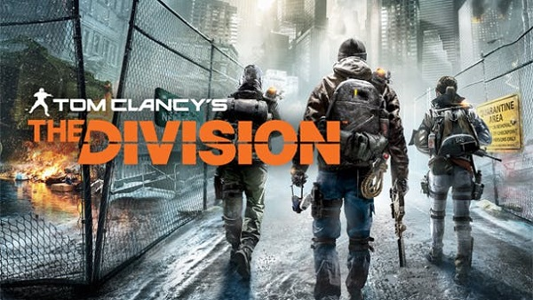

The Division estrenará su propia película en Netflix
También confirma sus protagonistas y primeros detalles.
En el escenario del E3 2019, Ubisoft anuncia que la película de The Division, que ya estaba confirmada desde hace tiempo, se estrenará en Netflix. Los detalles al respecto son escasos por el momento, aunque desde la cuenta oficial de esta la plataforma informan que David Leitch asume el cargo de director, mientras que Jessica Chastain y Jake Gyllenhaal harán de protagonistas.
A falta de saber cómo se vincula la cinta al videojuego original, Netflix explica que la serie se desarrollará en una Manhattan afectada por el virus que, como ya sabemos, lleva a la ruina a todo Estados Unidos. Si prefieres quedarte solo con el juego, te agradará saber que The Division 2 se podrá descargar gratis esta semana y que ya tiene ventana de lanzamiento para su nueva incursión.
[Access Granted. Commencing Transmission]
— NX (@NXOnNetflix) 10 de junio de 2019
Director @DavidMLeitch, @Jes_Chastain, and Jake Gyllenhaal are bringing Ubisoft’s The Division to Netflix. It’s the Tom Clancy high-stakes action you love, in the pandemic stricken Manhattan that offers no second chances. pic.twitter.com/cpi6JCp4EM
Takagi Show
@Takagi Show desde mi casa 2019-2019 Todos los derechos reservados SOBRE TAKAGI SHOW